Deck QA v3 — added baseline CS, with-controls cohort, redesigned map
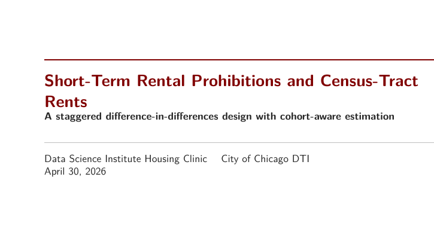
1Title
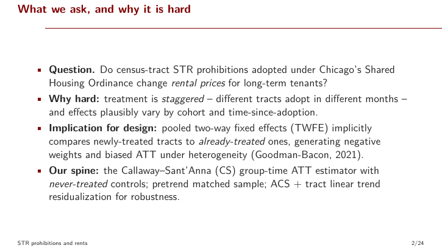
2What we ask
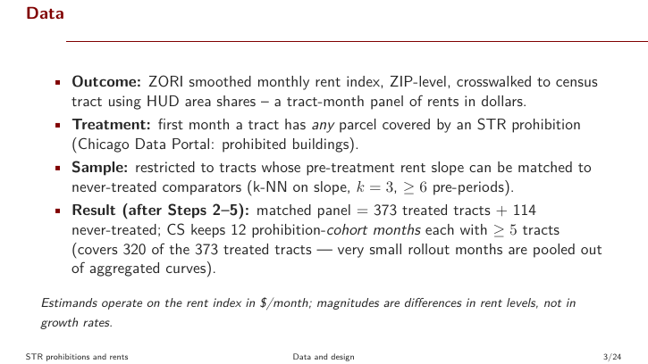
3Data
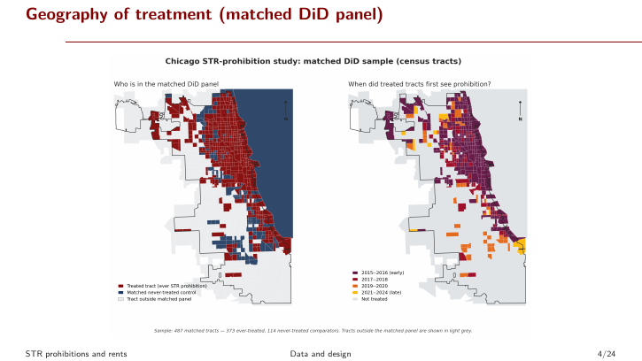
4Map (NEW)
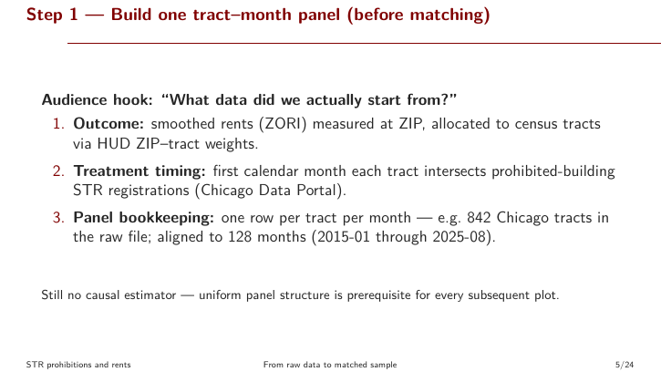
5Adoption / parallel
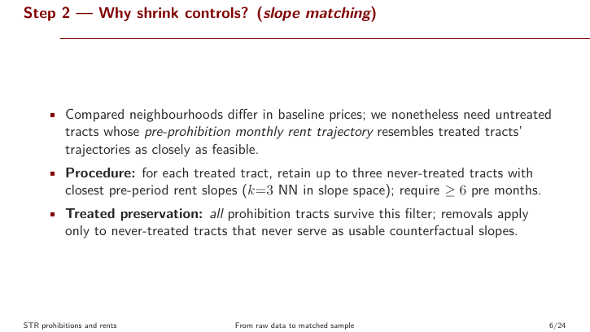
6Level-gap table
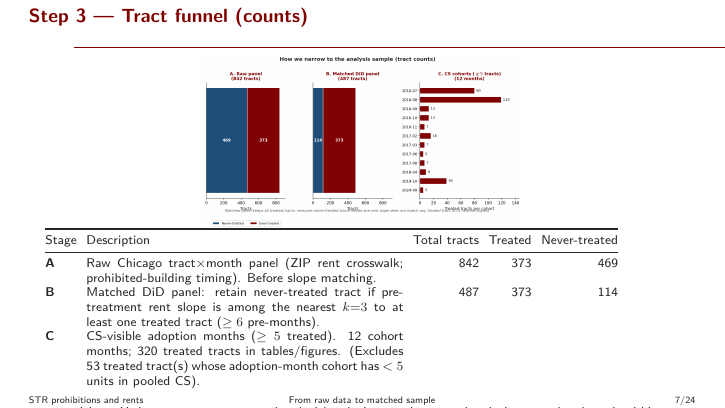
7CS rationale
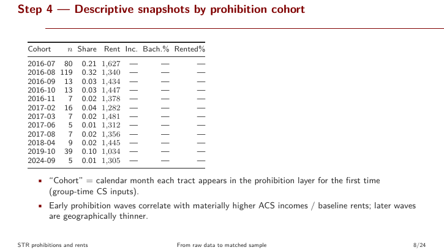
8Baseline CS event study (NEW)
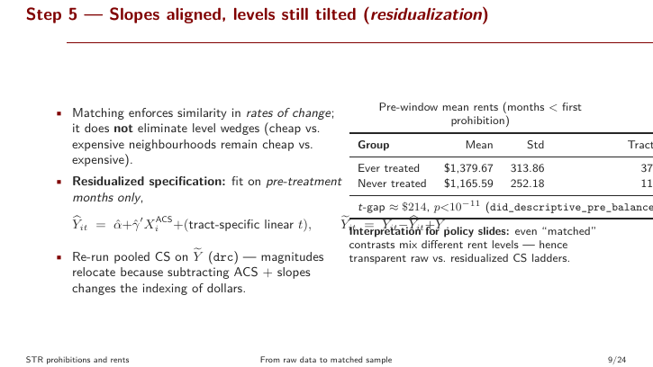
9CS w/ controls event study
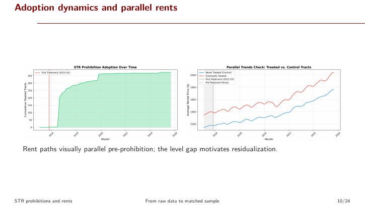
10Pooled ATT table
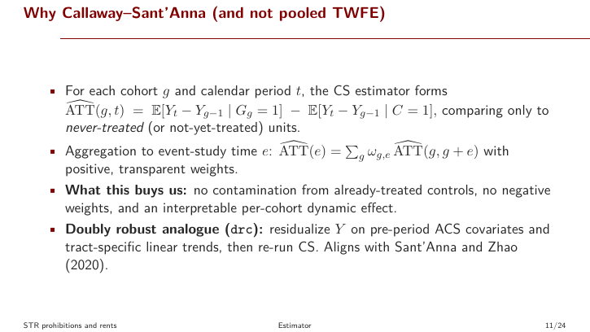
11Cohort heterogeneity (baseline)
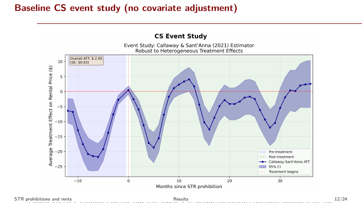
12Cohort heterogeneity (w/ controls) (NEW)
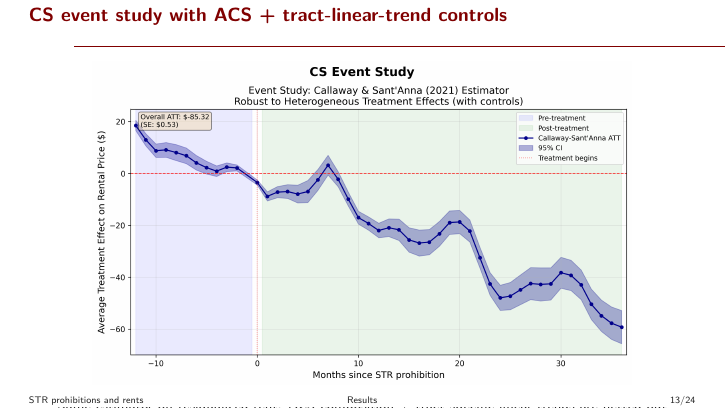
13Residualization explainer
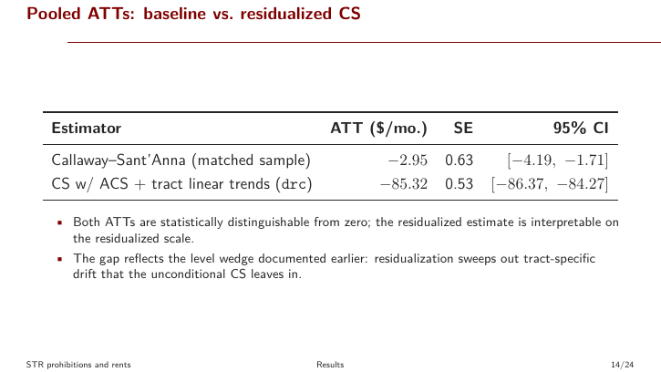
14TWFE vs CS
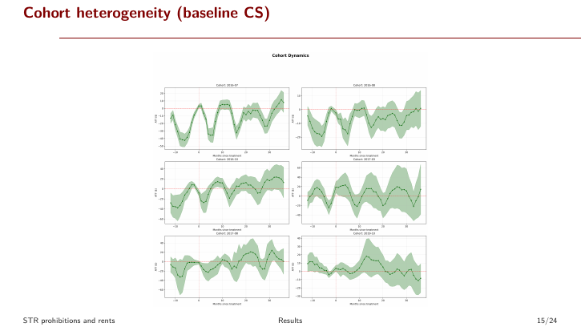
15SUTVA narrative
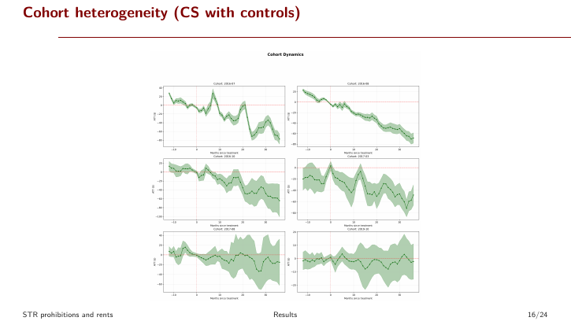
16Donut
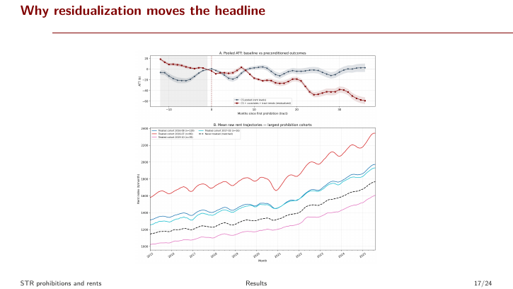
17Dose response
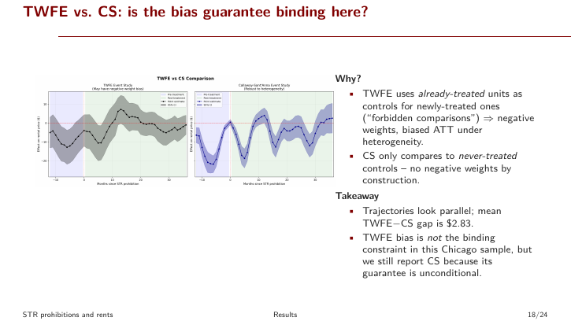
18Pretrend heuristic
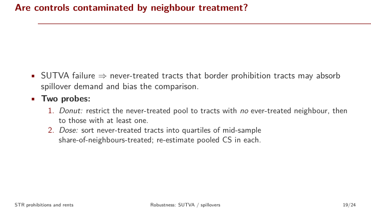
19Conclusions
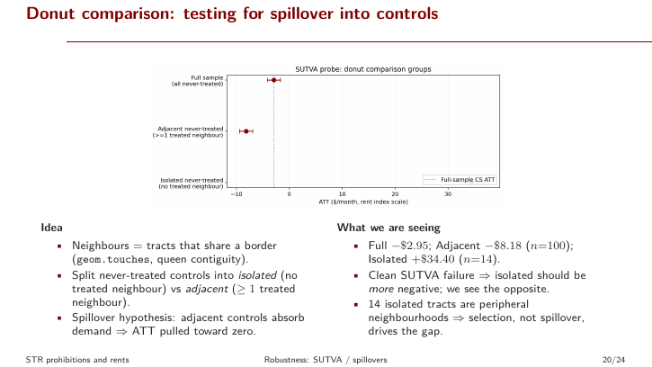
20References